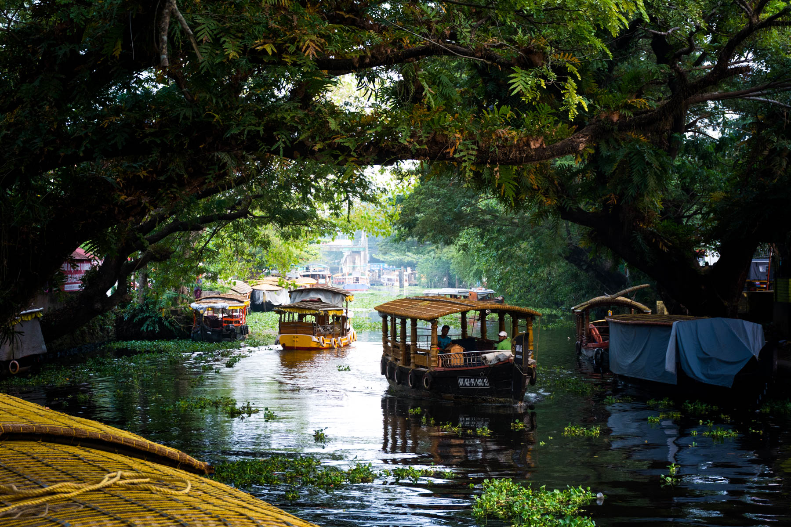
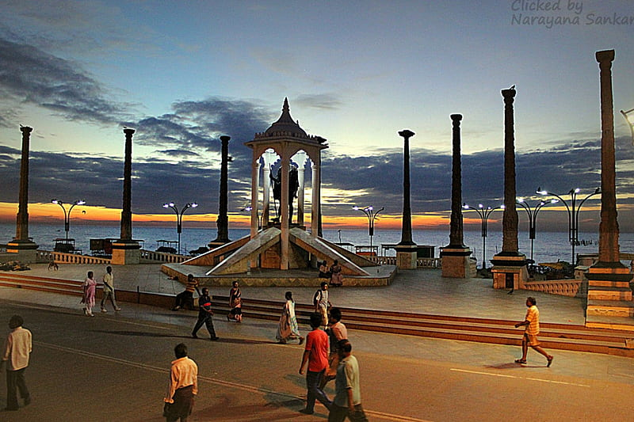

SOUTHERN INDIA
FORT KOCHI
|
Fort kochi Known as the "Gateway to Kerala", Kochi is an enchanting city that's had an eclectic influence. The Arabs, British, Dutch, Chinese, and Portuguese have all left their mark on the city. Most people recognize Kochi from pictures of the famous Chinese fishing nets that line the waterfront. Fort Kochi is full of architecture and historical sites, and is a marvelous place to stroll around and explore on foot |
BACKWATERS OF KERALA
|  |
Visiting backwaters, is one of the best things to do in Kerala. You can spend the night on the boat, out in the middle of the water, surrounded by serenity. Bliss! And while you're in the area, why not stay a night or two at a resort or homestay on the backwaters? You'll be able to feast on freshly caught and prepared seafood, according to traditional recipes. Plan your trip with this guide to the Kerala Backwaters and book hotels and resorts for all budgets. |
HAMPI

|
One of India's top historical destinations, the laid-back village of Hampi was once the last capital of Vijayanagar, one of the greatest Hindu empires in India's history. The ruins, which date back to the 14th century, stretch for just over 4187 hectares and comprise more than 1600 monumental remains. An incredible energy can be felt at this ancient place. Hampi is commonly visited from Goa, as there are a number of transport options from there |
PONDICHERRY
|  |
Pondicherry was a former 18th century French colony and remains a separate union territory on the east cost of Tamil Nadu. It retains a distinctly French flavor and provides a delightful break. Wander around the atmospheric French Quarter and along the Promenade, soak up the peaceful atmosphere, dine in delicious restaurants, and browse the boutiques. |
MAHABALIPURAM
|
Mahabalipuram is a beach town with a thriving backpacker and surfing scene, an hour or so south of Chennai. It's also renowned for its stone sculpture industry, so set some money aside to shop! Other attractions are the Shore Temple, Pancha Rathas, and Arjuna's Penance . A classical dance festival happens there every year from late December to late January. The many beach resorts in the area make Mahabalipuram a popular getaway from Chennai. |
MYSORE
|
Mysore has an impressive royal heritage, with the city's main tourist attraction being the imposing Mysore Palace. There are many other interesting buildings, palaces, and temples to see. The zoo is notably one of the best in India. Mysore is also an excellent place to shop for sandalwood, and study Ashtanga yoga. The annual 10-day Mysore Dasara festival is another attraction. |
NORTHERN INDIA
TAJ MAHAL

|
The Taj Mahal in Agra is India's most iconic monument and one of the top historical places in India. Hence, it usually features prominently on tourists' bucketlists. You can't visit North India and not see the Taj! It looms like a fairy tale from the banks of the Yamuna River and has an eventful history dating back to 1630. One of the most captivating things about it is the way its color appears to gradually alter in the changing light of the day. |
LADAKH

|
Ladakh has become an increasingly popular tourist destination since it was opened to foreigners in 1974. Leh, the most common entry point to the region, is bounded by two of the world's largest mountain ranges and surrounded by alpine desert. Buddhist monasteries and trekking opportunities are the biggest draws for visitors. The Nubra Valley is a highly recommended side trip from Leh. Most tourists also go to Pangong Lake. |
KANHA NATIONAL PARK

|
Tourists often want to go on safari while in India with hope of seeing a tiger in the wild. Kanha National Park is one of the best places to do so. Most people who visit it end up falling in love with it and calling it their favorite national park in India. This huge park provided the setting for Rudyard Kipling's classic novel The Jungle Book and an abundance of wildlife can be spotted there, not just tigers. It provides an all-round nature experience. |
AMRISTAR
|
Everyone who visits the exquisite the Golden Temple in Amritsar is invariably awestruck by it. The city is the spiritual capital of the Sikh religion. It was founded in 1577 by Guru Ram Das, the fourth guru of Sikhs. The temple looks particularly arresting at night when it's beautifully lit up, with its imposing pure gold dome illuminated. If you love street food, Amritsar is renowned for it! Amritsar's Old City is also worth exploring. |